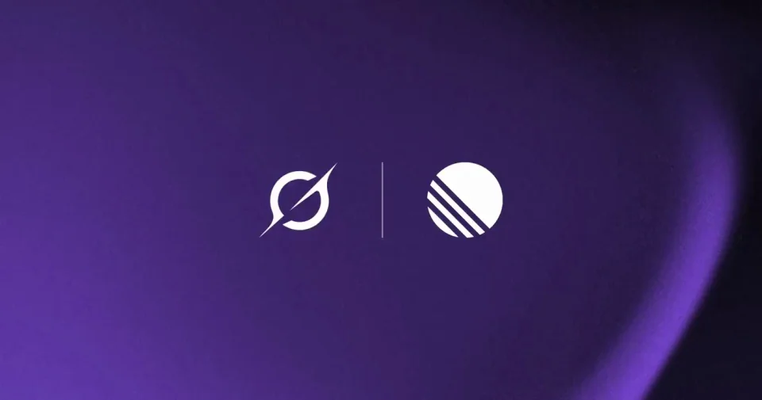
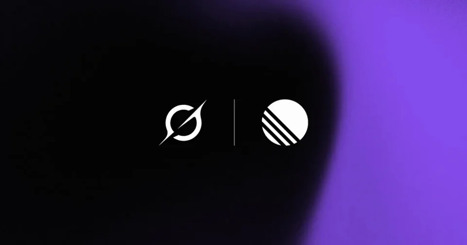
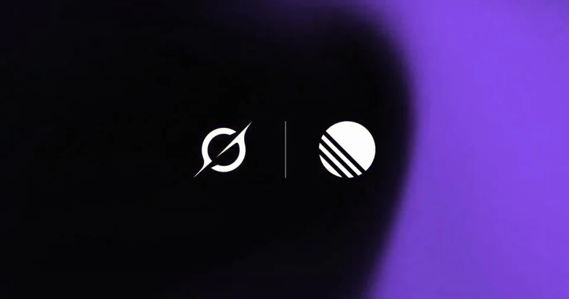

xAI / Grok / V311
Grok Bot × Linear
把两个品牌作为画面的唯一主信息。它们保持固定，紫黑背景提供缓慢而连续的流动。
构图与编排 可播放 · 可替换内容
整体编排规则示例
查看 HTML 源码
<!doctype html><html lang="zh-CN"><meta charset="utf-8"><meta name="viewport" content="width=device-width,initial-scale=1"><title>Grok Bot × Linear · sequence</title><style>html,body{margin:0;width:100%;height:100%;overflow:hidden;background:#24203a}canvas{display:block;width:100%;height:100%;object-fit:contain}</style><body data-mode="sequence"><canvas width="1000" height="600"></canvas><script src="data.js"></script><script src="common.js"></script><script src="scene.js"></script><script src="bridge.js"></script></body></html>画面元素主品牌分隔线合作品牌流体背景
MOTION LANGUAGE
动作与构图
局部动作 · 构图规则
01
两方标识保持等权
标识在同一水平线上，细竖线位于中间。按视觉重量调整大小，双方留白接近；文字替代标识时使用简洁的白色无衬线。
紫黑背景压低亮度，只在远离文字的位置保留柔软高光。
02
背景流动，标识不跟着漂移
褶皱以低速穿过画面，明暗变化连续。分隔线、标识基线和两侧间距始终保持稳定。
03
换成另一组合作方
替换双方名称与品牌色，再重新平衡视觉重量。只保留合作身份这一层信息，让画面有足够时间读完两个名字。
SEQUENCE
段落与节奏
点击段落，定位到上方编排示意。



画面参考 · 离散静帧
KEEP THE RELATIONSHIPS
制作其他主题
- 可替换双方名称与配色，保留同等权重和稳定分隔。
- 不根据合作名臆造功能演示。
制作约束
主品牌 / 分隔线 / 合作品牌 / 流体背景
- 两枚品牌固定对齐，背景持续流动，避免抢文字。
- 只用品牌与背景表达合作，保持信息简洁。